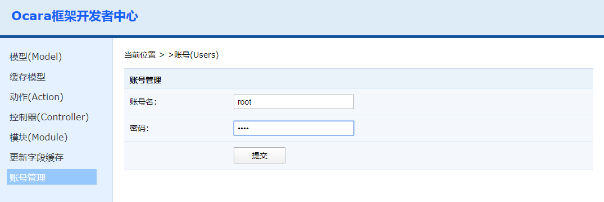

开发者账号管理
进入开发者中心时要输入用户名和密码登录。这些用户，都可以在开发者中心添加和编辑。 1、root账号 框架中默认已经添加了一个root用户，密码也是root。首先通过这个用户进入开发者中心，就可以添加新的开发者用户账号。 2、新增或修改账号 用户数据保存在ocara框架目录下的extension/resource/tools/develop/data/users_data.php文件中。 （1）进入开发者中心，点击左边的"用户管理"菜单。右边会出现编辑用户的界面。新建和修改用户的操作都在这里。  （2）提交后，如果用户名不存在，会新建一个用户。如果存在，会将覆盖原来密码。